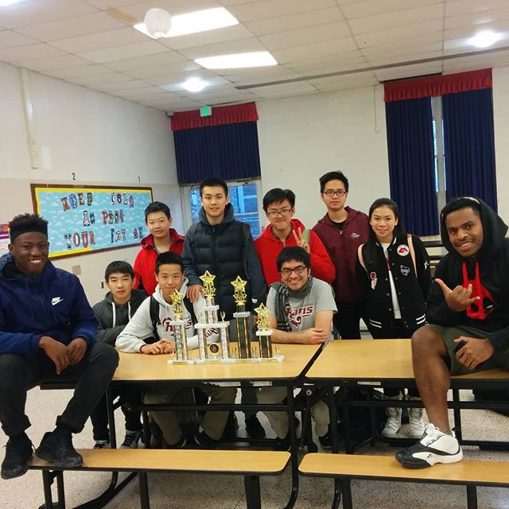

Tutoring
Consultation with the Department of Geography at FSU: Organized and hosted bimonthly meetings to discuss possible ML projects with geographical data.
Co-tutored two FSU undergraduate students in UROP (the Undergraduate Research Opportunity Program) on their projects analyzing Tropical Forest data.
Tutored two FSU students on the project "Translation from the Urban Dictionary". I helped them webscrap the database of definitions, and guided them to write a Python script that, given an input phrase, substitutes the words by their definitions according to the dictionary.
Volunteer at AccessibleNU. I helped a couple of students with disabilities catch up on their math courses.
Coordinated the chess team at West Nottingham Academy in Maryland in 2017. Won in multiple places in the 4th Annual Mid-Atlantic Grade Championship: - First place in the 9th grade teams category. - Second place in the 11/12th grade teams category. - 3th place in an individual performance for 9th grade. - 5th place in an individual performance for 11/12th grade.
